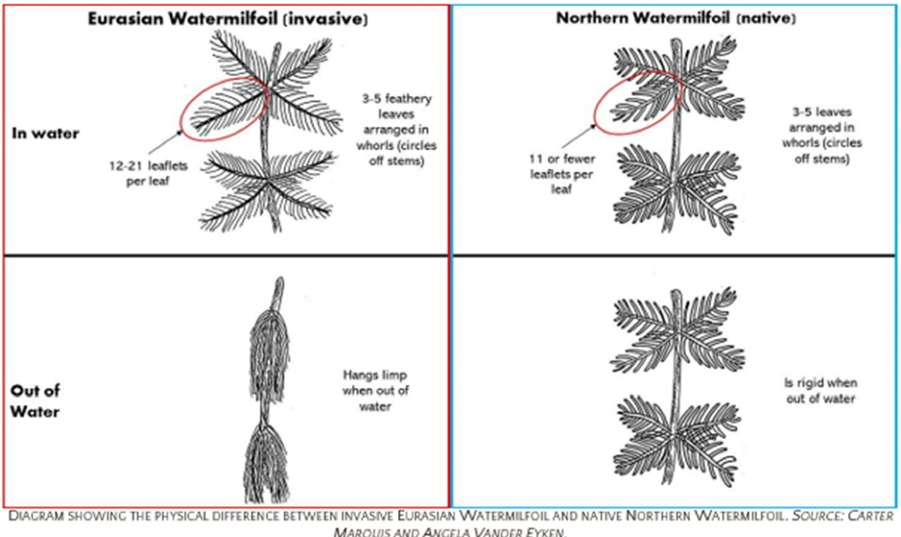
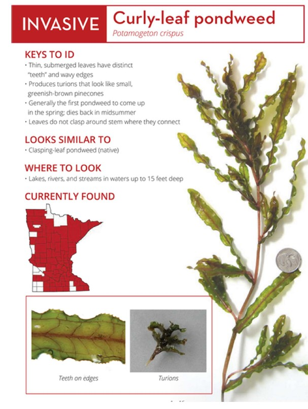

Aquatic Invasive Species
Understanding the threat, and our coordinated response to keep Lake Julia clean.
Understanding the threat, and our coordinated response to keep Lake Julia clean.
Eurasian Water Milfoil has taken root in Virgin Lake, just downstream on Julia Creek. The infestation has proven difficult to eradicate or contain. Preventing its spread to Lake Julia is a top association priority.
Primary Threat
Lake Julia is in very good condition. A comprehensive study by Onterra LLC (2010–13) confirmed it, and a follow-up study in 2025 reaffirmed it — no aquatic invasive species were found in either survey. But maintaining that status requires ongoing vigilance, chief among the threats being Eurasian Water Milfoil.
EWM can grow to form a dense mat on the lake surface, crowding out native plant life and degrading water quality and recreational use. It is visually similar to a native, non-invasive water milfoil species; distinguishing between them requires trained inspection.
For several years, small EWM patches have appeared elsewhere in the Three Lakes–Eagle River chain. More recently, EWM has taken root in Virgin Lake, just downstream from Lake Julia on Julia Creek. That infestation, while not yet large, has proven resistant to eradication efforts.
Boat inspection at the boat landing is our primary tool against EWM. Learn about the program, how it's funded, and how to get involved on the Clean Boats, Clean Waters page.

TLWA Newsletter, Fall 2021 (16 pp), includes Onterra report on Virgin Lake
Onterra Virgin Lake Report (2 pp)
Three Lakes Waterfront Assn, photos of the Virgin Lake harvesting effort
TLWA Newsletter, Fall 2020, detailed Virgin Lake reporting
Secondary Threat
Curly-leaf pondweed (Potamogeton crispus) is another invasive plant that boat inspectors watch for. Its thin, submerged leaves have distinct "teeth" and wavy edges, and it produces small, greenish-brown turions (bud-like structures) that can hitch a ride on boats and trailers. Unlike most native plants, it greens up early in spring and dies back by midsummer, often forming dense mats during that window.
It can be confused with the native clasping-leaf pondweed. As with EWM, careful inspection at the landing is the best line of defense.

Cascading Effects
Beyond ecology, EWM infestations have measurable impacts on lakefront property values. A research project from 1990 to 2019 by the University of Minnesota Aquatic Invasive Species Research Center (MAISRC) summarizes the economic case for prevention.
Read: Will Property Values Cool as Aquatic Invasive Species Heat Up?